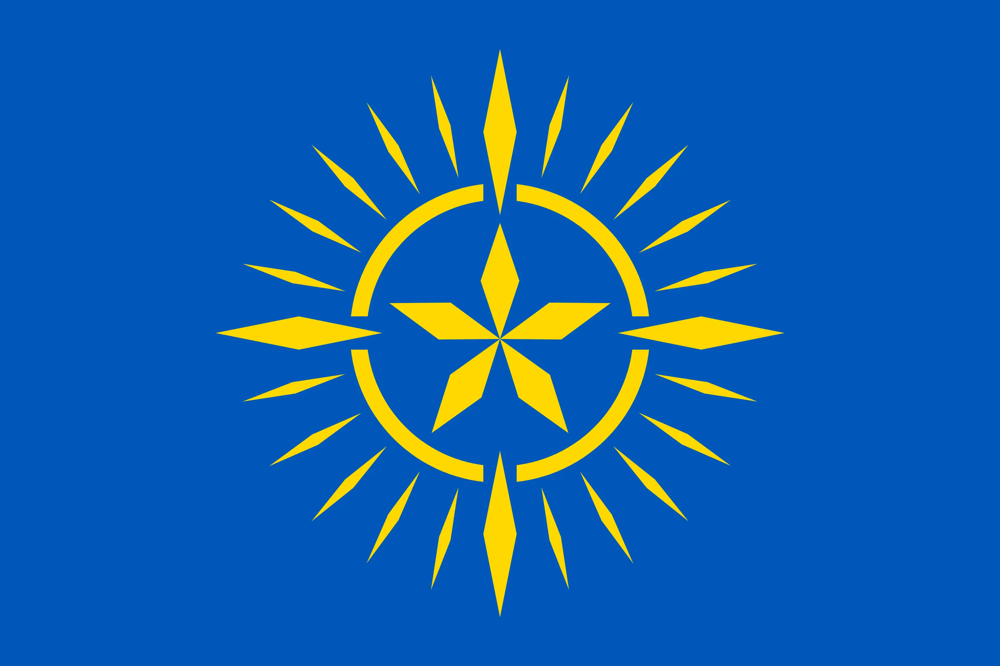
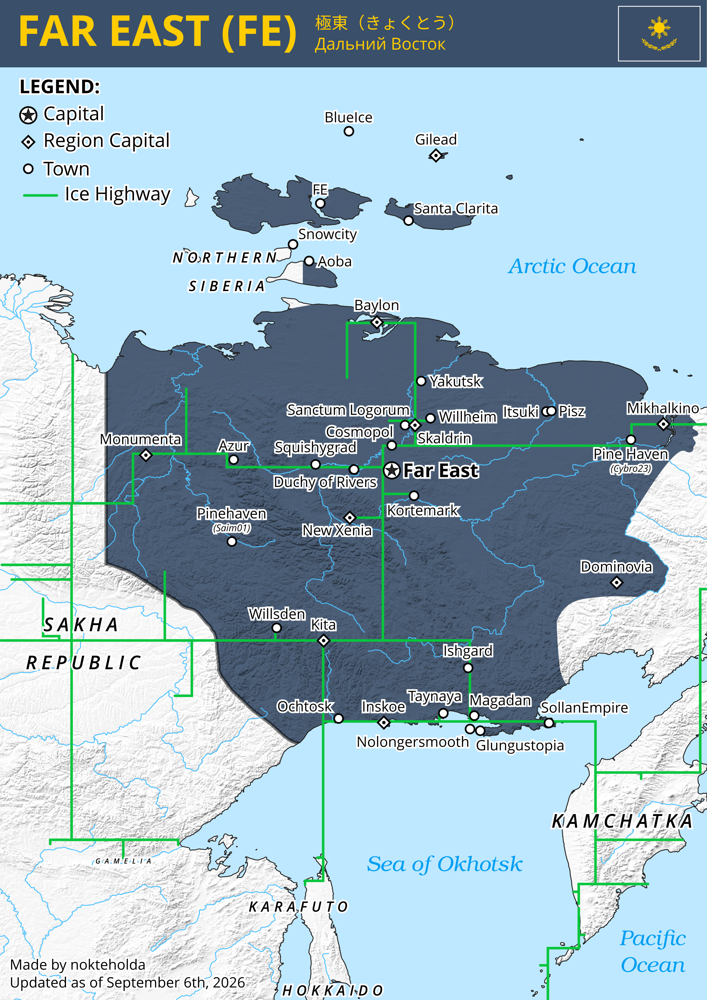

Bendera
Bendera yang dibuat untuk Worldubuilding, Dunia Fiksi, atau EarthMC


Bendera Civusia


Bendera Kustom Asia Tengah
Fotografi/Gambaran
Beberapa foto yang dipotret/digambar oleh saya sendiri
Logo
Beberapa logo vektor yang didesain oleh saya sendiri
OS Mockups
Sebuah komunitas niche yang kebanyakan membuat bootscreen OS fiktif
Peta
Beberapa peta yang dibuat menggunakan paint.net ataupun QGIS

Peta Negara Timur Jauh (FE, EarthMC)